Personal finance software
Every account, any currency, one horizon.
WealthHorizon keeps a record of what you own and what you owe — current accounts, savings, cards, mortgages, investments, pensions and property — and works out what it all comes to. It is a replacement for Microsoft Money, and it runs in a browser on your phone, your tablet or your desktop.
There are four editions. Free is the one we host — nothing to install, and it holds up to 30 accounts, 1,000 transactions and 5 MB. Standard, Pro and Advisory run on your own hardware, with no limit but your disk. Pro adds long-term planning, tax and forecasting; Advisory is for regulated firms managing client books.
What it does
A register, a portfolio and a plan — in one place
Most people keeping track of their money end up with three things: a register of transactions, a spreadsheet of investments, and another spreadsheet for the plan. WealthHorizon holds all three, so a change in one shows up in the others.
The register
One row per transaction, with a running balance after each, so you can reconcile against a statement by finding the row where the two stop agreeing. Splits, matched transfers between your own accounts, payees, categories and repeating payments all work the way they did in Money.
You can type the arithmetic into an amount box — 120+45.50+18 — and it works it out.
Your investments
Holdings are priced in the currency they are quoted in, and each purchase is tracked as its own lot, so a disposal knows what it cost. Share splits, dividends, corporate actions, foreign withholding tax and an investment account’s own cash side are all handled.
An account with a missing price says so, rather than quietly reading short.
What it comes to
One net worth figure, and a panel underneath that shows the sum: every account, its balance, the rate it was converted at and what that came to. If a currency has no rate, the figure is shown in its own currency rather than guessed at.
Snapshots record where you stood on a date, so the chart is a record, not a re-estimate.
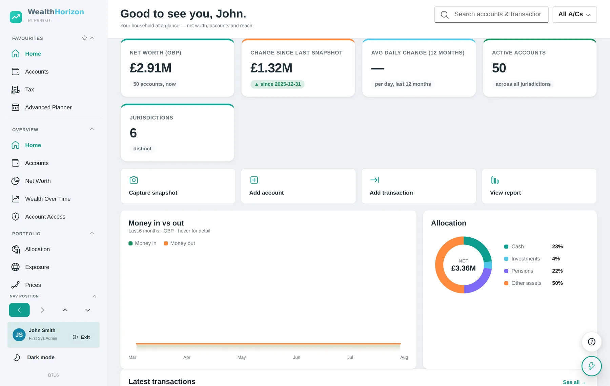
Editions
Three editions, plus a free one to start with
Standard is the like-for-like replacement for Microsoft Money. Pro adds the planning, tax and forecasting work that Money never did. Advisory is a different product for a different reader — it is for regulated firms, and it is described in The Advisory.
Standard — what Microsoft Money did, without the Windows
Standard is meant as a like-for-like replacement. If you kept your accounts in Money, the things you used every day are here, in the same shapes and under the same headings.
Your old file comes across. WealthHorizon reads .mny and
.mdb/.accdb files directly, as well as QIF, OFX, CSV and
Excel, and shows you what it found — account by account, with the balances it
calculated — before anything is saved.
What Standard does not include. The long-term planner, the month-end funding plan, share price forecasts, inheritance tax and the capital gains tools are all in Pro. Nothing in Standard is time-limited or reduced, and there is no cap on accounts, transactions or storage — what it holds is bounded by the disk it is running on and nothing else. Standard is installed on your own hardware; Free is the edition we host.
In Standard
- Accounts of every kind — current, savings, credit card, loan, mortgage, investment, pension, property, vehicle — each with its own country, currency and tax wrapper.
- The register with a running balance, splits, matched transfers, payees, categories, and arithmetic in the amount box.
- Repeating payments — weekly to yearly, with the month laid out as a calendar of what is due.
- Investments — holdings, lots, prices, dividends, share splits and an account’s own cash side.
- Reports arranged under Money’s own headings: spending by category and by payee, comparisons between periods, account balances with detail.
- Imports from Money, QIF, OFX, Trading 212, Saxo, Barclays and any CSV or spreadsheet, with the columns mapped by you and a preview before it commits.
- Exports to CSV, Excel, QIF and OFX, per account.
- Multiple currencies, with each entry keeping the rate it was converted at.
- Backups you can schedule, encrypt and restore.
- Documents filed against an account — statements, contract notes, certificates.
- Household access — share an account with a partner, or give read-only access, and see who has looked at what.
What it looks like
The application, with a demonstration household loaded. Select an image to see it full size.
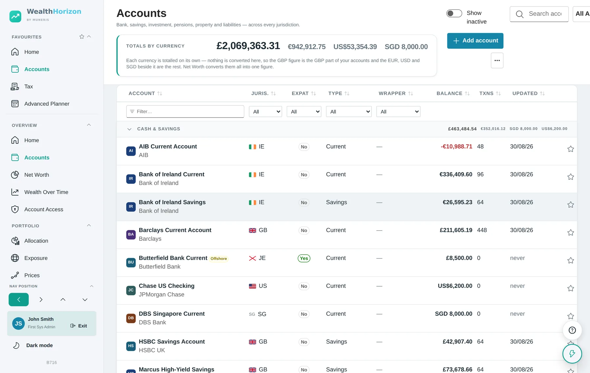
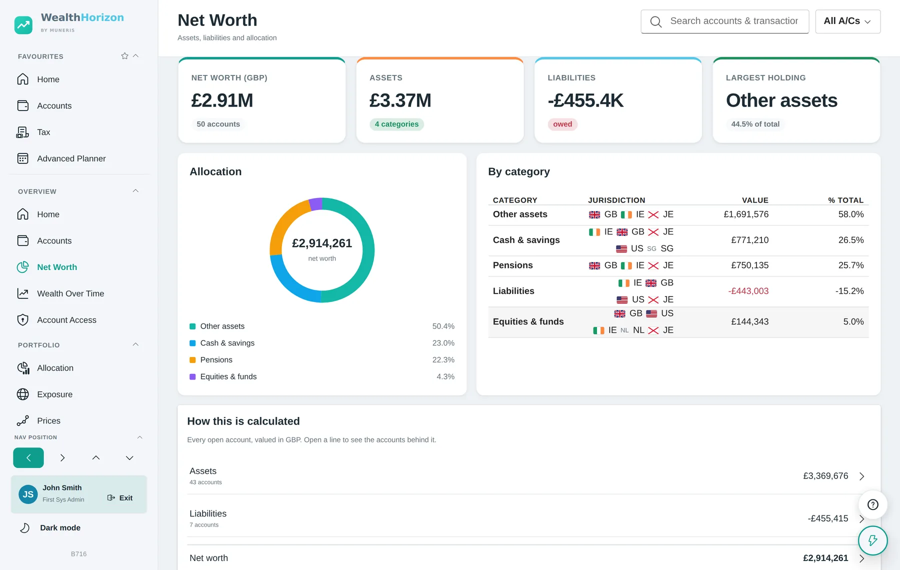
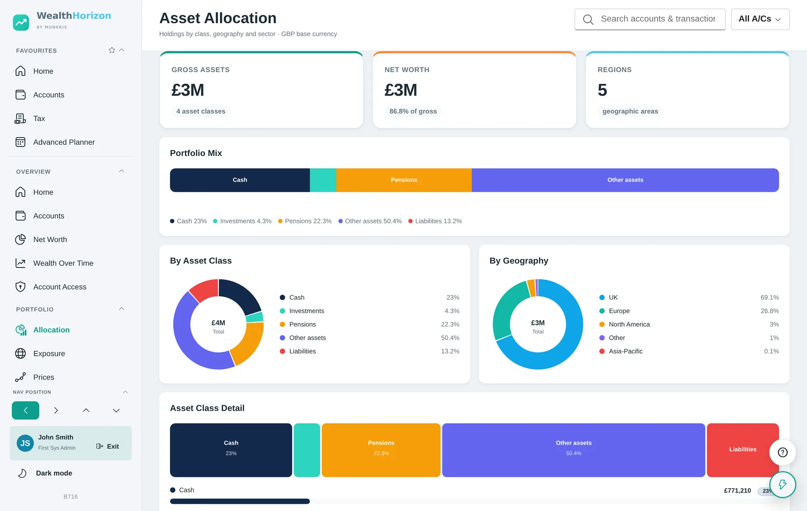
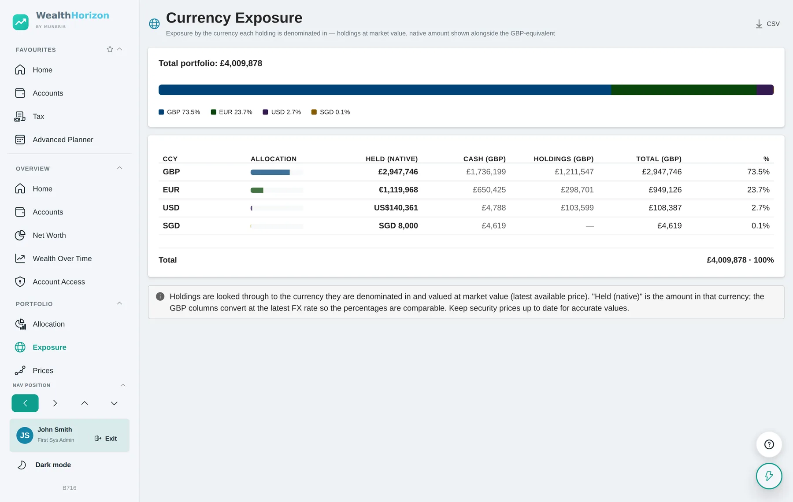
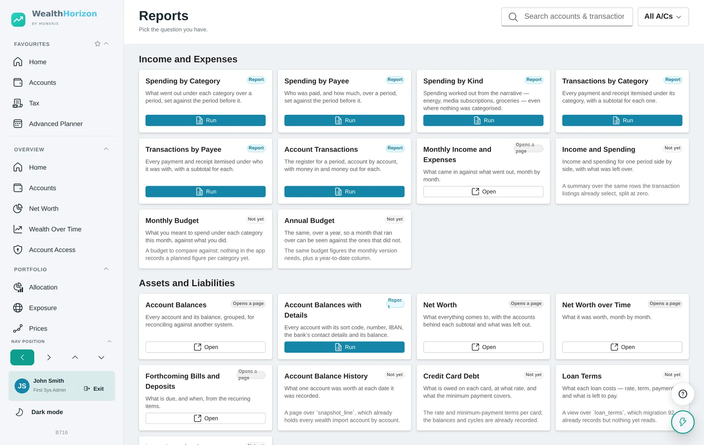
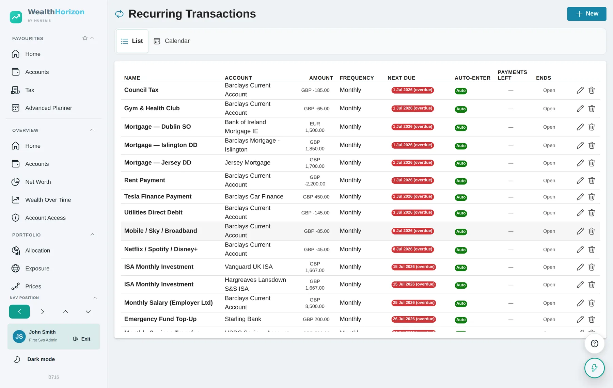
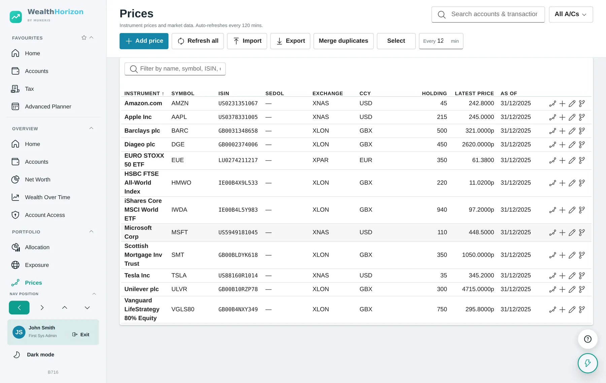
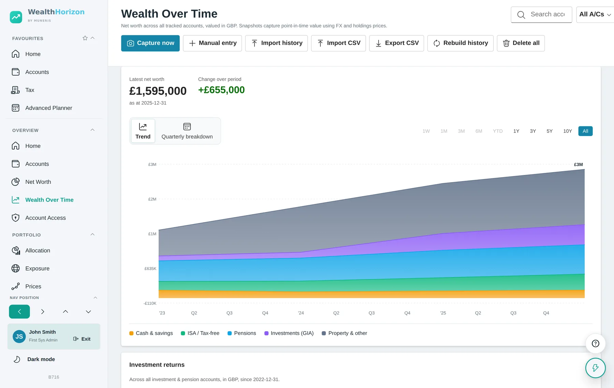
Pro — everything in Standard, and the questions Money could not answer
Money told you where you stood. Pro is about where you are heading: whether the plan works, what the month needs, what a holding might be worth, and what the tax will be.
Long-term planning
Build a plan and see it year by year. Say what you intend to live on and the projection works out what your guaranteed income — state pension, defined benefit, earnings — leaves uncovered, and draws exactly that, grossed up for the tax you will pay on it. It tells you the first year you fall short, when each pot runs out, and what is left at the end.
Three outlooks, what-if scenarios, and a Monte Carlo simulation for the range of outcomes rather than a single line. The order you spend your pots in is yours to set, because which pot you spend first is a tax decision rather than an arithmetic one.
Month-end planning
The month before it happens: one row per account showing what it opens with, what comes in, what is due, its worst point, and whether it gets through. Then a worksheet of what to move from where — with the reason each source was chosen and what else was considered — and the list of transfers grouped by the bank you log into, so it is one visit per login rather than one per movement.
Share price forecasting
A grid of what you expect each holding to be worth: instruments down the side, dates across the top, a price in the cell. A growth rate cannot say that one company does something different from another, and an unlisted holding has no market price at all — a forecast is the only price it will ever have. Import the spreadsheet you already keep, and export it back.
Inheritance tax and capital gains
An estate valuation with the nil-rate bands applied and the sum shown line by line, a register of gifts against the seven-year rule, and the strategies worth considering. For capital gains: FIFO or the full UK matching rules — same day, then the following 30 days, then the pool — with unused losses and allowance brought into the picture.
In Pro, in addition to Standard
- Advanced Planner — outlooks, what-if scenarios, Monte Carlo, pensions, income streams with start and end years, inflation and retirement spending.
- Planning wizard — a guided fact-find that only asks the questions that apply to you, pre-filled from your accounts.
- FIRE mode — your FIRE number, savings rate, years to independence, Coast and Barista, and a bridge planner for the gap before pension access age.
- Roadmap and goals — goals on a timeline against your plan and your actual wealth, with the shortfall quantified.
- Month-end plan — the picture of the month, the transfer worksheet, the bank instruction list and a journal of what you decided to move.
- Monthly pack — where you stand, what is due, how the goals are going, in one printable run.
- Price forecast — per instrument, per date, imported and exported as a spreadsheet.
- Estate & IHT planner — liability, nil-rate bands, the seven-year gift register.
- Capital gains — FIFO or full UK matching rules, plus an optimiser that finds loss-harvesting opportunities.
- Dividend tracker — income by security and by account, with withholding tax and the year-on-year change.
- Tax workspace — calculator, allowances used and remaining, up to three jurisdictions side by side, residency day counts.
- Cash flow forecast — twelve months of inflows and outflows from your repeating items.
- Rebalancing and exposure — drift against target, and what you are exposed to by currency, geography and sector.
- Connections — Open Banking and a read-only Trading 212 link, both optional.
- No storage cap — as with Standard, what it holds is bounded by the disk it is running on.
- Alerts and data health — price thresholds, net-worth thresholds, overdue items, stale prices and missing rates.
What it looks like
The Pro tools, with a demonstration household loaded. Select an image to see it full size.
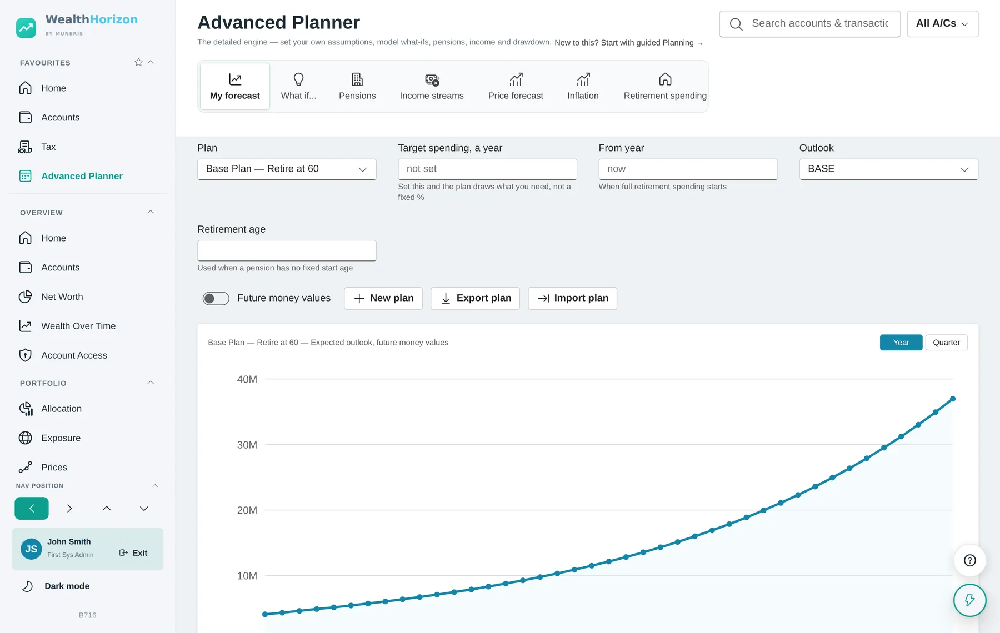
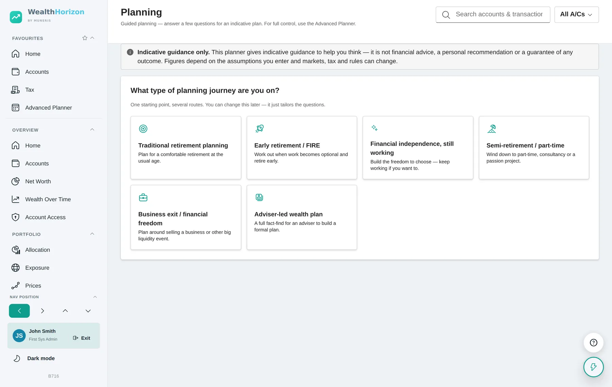
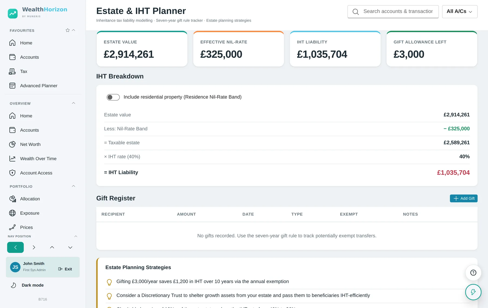
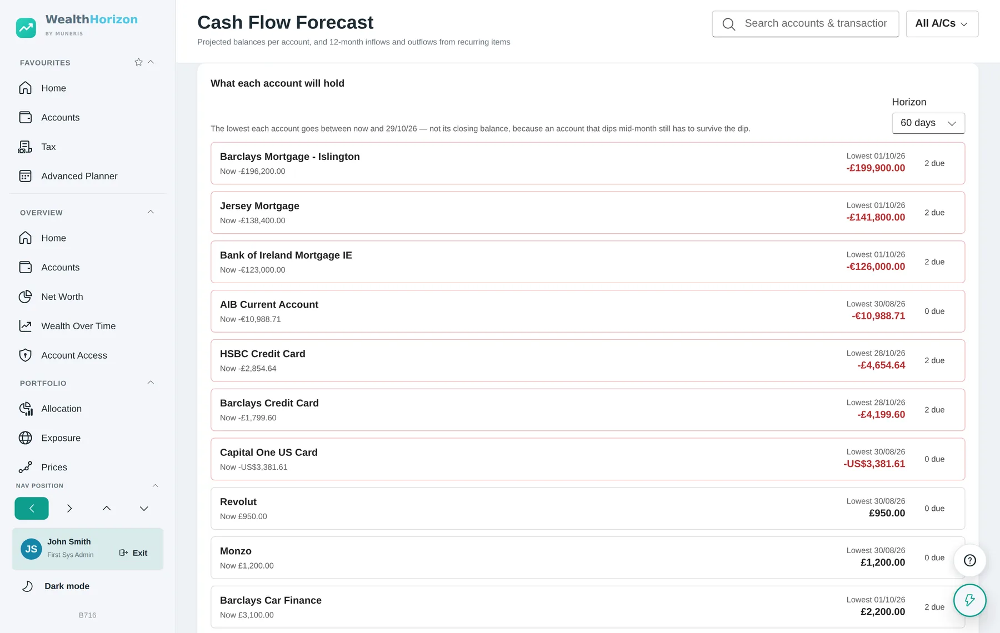
Advisory — a client book, and the evidence that goes with it
The Advisory edition is for regulated firms. It gives every client the Pro product, and gives the firm the supervision, governance and record-keeping layer that sits above it: a management-information dashboard, a vulnerable customer register, fair value and charge assessments, suitability reporting, a firm hierarchy and an immutable audit trail.
It is built around the FCA Consumer Duty’s four outcomes — products and services, price and value, consumer understanding and consumer support — and around the requirement to monitor outcomes, act on poor ones, and evidence both.
The Advisory edition has its own section of this site, with detail on each module and screenshots of the advisory, compliance and firm-hierarchy views.
In Advisory, in addition to Pro
- Client book — step into a client’s account, with every access written to a log the client can read.
- Consumer Duty MI dashboard — outcomes, vulnerability, charges, reviews and complaints across the book.
- Vulnerable customer register — flag type, severity, support actions taken and review dates.
- Vulnerability scoring — an explainable score per client, with the contributing factors listed.
- Fair value and charge justification — value assessed by service tier and per client, RAG-rated.
- Annual review tracker — overdue, due soon and on track, with the review recorded when it is done.
- Risk assessment — an eight-question profile with a stated capacity for loss.
- Suitability reports — COBS 9.4 letters with a reference, generated from the client’s own file.
- Board report — the annual attestation across the four Consumer Duty outcomes.
- FCA evidence export — a structured supervisory pack in JSON and CSV.
- Platform overview and firm hierarchy — adviser performance side by side, and rolled up through CEO, MD, VP, Manager and Adviser tiers.
- Audit log — who accessed or changed what, and when, restricted to compliance.
- Client portal — a branded, expiring, read-only view you can send a client.
What it looks like
Demonstration data. There are more screenshots, and detail on every module, in The Advisory.


Free edition
Start free, at 30 accounts, 1,000 transactions and 5 MB
The Free edition is the Standard edition with three numbers on it. Every feature is the real one — nothing is a preview, a trial or a reduced version.
It holds up to 30 accounts, 1,000 transactions and 5 MB of storage. For a household with a few current accounts, a couple of cards and an ISA, that is usually a year or two of records. When you reach any of the three you are told which one, and nothing already recorded is removed or hidden. Moving to Standard lifts all three and keeps everything as it is.
The 5 MB covers your records and any documents you file against an account, together. If you do not attach documents you will reach the transaction limit first; if you do, storage is what you will reach first, because a few scanned statements go further than a year of entries.
Free is the edition we host, so there is nothing to install and nothing to keep running — you sign in and start. The three numbers are what we give a free account on our own machines. Standard, Pro and Advisory install on your hardware instead, and there the only limit is the disk you gave them.
There is no time limit and no card needed to begin, and your data is exportable at any point, in CSV, Excel, QIF or OFX, whichever edition you are on.
Free
Everything in Standard, capped
- Up to 30 accounts
- Up to 1,000 transactions
- 5 MB of records and attached files
- Every Standard feature, in full
- Hosted by us — nothing to install
- Import from Money, QIF, OFX, CSV and Excel
- Export whenever you want, in four formats
- No time limit
The Pro planning, tax and forecasting tools are not in Free, and neither is the Advisory edition.
See what each edition holdsWhere it runs, and who can see it
The data does not have to leave your building
You run it
Standard, Pro and Advisory are installed on your own hardware. The whole system is three containers — a database, an API and the web app — and it runs on a laptop, a network drive at home, a server at the office, or any cloud you already use. There is nothing proprietary in the hosting.
We host two things and no more: the Free edition, and a demonstration account.
It works offline
On your own hardware, market data, Open Banking and email are all optional. With none of them configured the product still works — prices and exchange rates can be entered or imported by hand, and nothing phones home to make the app usable.
You can see who looked
If your account is linked to an adviser, an Account Access page lists who at the firm opened it, when, and in what role. Sharing your plan with an adviser is a separate switch that you control and can turn off.
Not advice. The planning, tax and forecasting tools produce projections from assumptions you enter. They are there to help you think, and they are not financial advice, a personal recommendation, or a guarantee. Tax rules change and markets move.